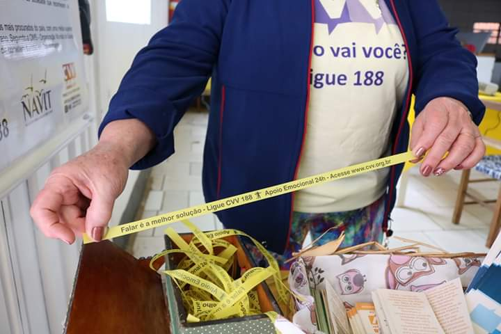
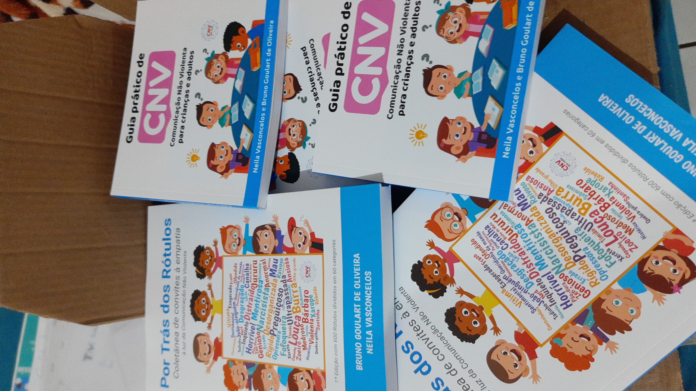

← Voltar ao InícioAtividade (2016)Atividade (2016)Atividade (2016)Atividade (2016)Atividade (2016)Atividade (2016)Atividade (2016)Atividade (2016)Divulgação Setembro AmareloDivulgação Setembro AmareloBanner Grupo EnlutadosSetembro Amarelo 2024Coração 2024Banners metálicasBanners metálicasCNVAções com SecretariaRoda de conversa 2024Encontro Enlutados 2025Doação na crecheMemória da caminhadaPlaca no trevoPlaca trevoPlantando IpêComitê MunicipalCapacitação NAVITCombinadosRegistro de atividadeAtividade em igrejaImagemWhatsApp 2023